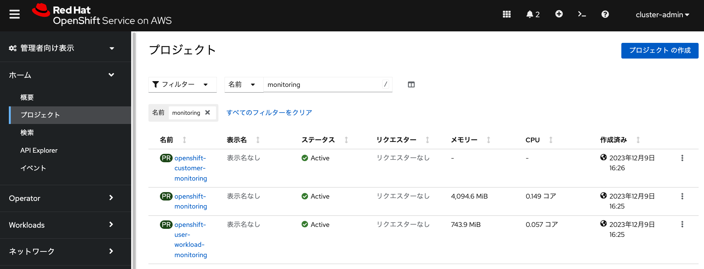
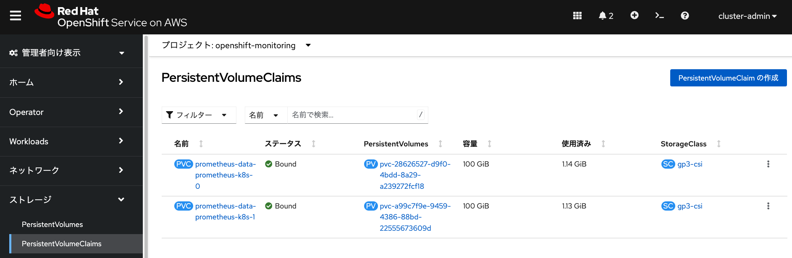
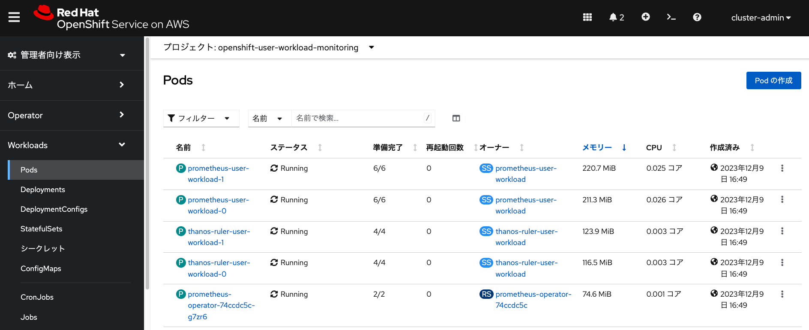

モニタリング 演習の概要 このモジュールでは、Prometheusによるモニタリングに関する情報を確認します。 ROSAクラスターは、デフォルトでPrometheusをベースとしたモニタリング機能が有効になっており、 下記の2つのユースケースで利用されています。 ROSAクラスター全体のモニタリング (Platform monitoring) 利用者が作成したプロジェクトのモニタリング (User-defined projects monitoring) この2つについて、どのようにROSAクラスターで利用されているかを確認していきます。 本演習をワークショップ形式で実施している場合、このモジュールでは、設定作業を実施しません。 クラスター全体のモニタリング ROSAクラスター全体のリソース利用状況のモニタリング、 いわゆる「プラットフォームモニタリング」とRed Hatの公式ドキュメントで定義しているものについては、 Red HatのSREチームによって利用されています。 ROSAの責任分担マトリクスによって、 プラットフォームモニタリングについては、Red Hatに責任があると定義しているため、 ROSAの利用者は、ワーカーノードにおけるユーザーアプリの利用状況の監視に集中できるようになっています。 ROSAクラスターでは、モニタリング機能を提供するPodが、 「openshift-monitoring」と「openshift-user-workload-monitoring」という2つのプロジェクトで実行されています。 プラットフォームモニタリング機能を提供するPodが「openshift-monitoring」プロジェクトで実行されます。 Red Hat SREチームの監視対象のリストは、 公式ドキュメントをご参照ください。 これらの一部はワーカーノード上で実行されており、ワーカーノードも含めてSREチームにより監視されています。 これらの情報は、ROSAクラスターの管理者アカウント( cluster-admin など)でログインすることで確認できます。 本演習をワークショップ形式で実施している場合、インストラクターが管理者アカウントを案内します。  利用者は「openshift-monitoring」プロジェクトで実行されているPodのリストを見ることができます。 これらのPodがワーカーノードで常に動くことを考慮して、ROSAクラスターのサイジングをする必要があります。 「openshift-monitoring」プロジェクトのコンポーネントは、 Red Hat SREチームの管理下に置かれており、 利用者が設定を変更することを、基本的にサポートしていません。 ROSAクラスターのPrometheusでは、 Red HatのSREチームによって、ROSAクラスターのコアコンポーネントのメトリクスデータが 永続ボリュームに一定期間保存されるように設定されています。 これは、「openshift-monitoring」プロジェクトのPVCの項目を見ることで確認できます。  利用者が作成したプロジェクトのモニタリング 利用者が作成したプロジェクトのモニタリングに関するカスタム設定が適用できるPodが 「openshift-user-workload-monitoring」プロジェクトで実行されます。 これらのPodは、 KubernetesのnodeSelctorを利用して、 任意のラベルを付けたワーカーノードに移動することができます。 Kubernetesの nodeSelectorは、 指定したPodを特定のノードで実行するように割り当てる仕組みです。  ROSA HCPクラスターでは、 rosa create cluster でHCPクラスター作成時に、 disable-workload-monitoring オプションで、利用者のプロジェクトの モニタリングを無効化できます。 利用者のプロジェクトに関するメトリクスデータは、デフォルトでは永続ボリュームに保存される設定にはなっていません。 このため、Podの再起動や再作成に伴い、利用者のメトリクスデータが失われる可能性があります。 利用者のメトリクスデータを、200GiBの永続ボリュームを利用して30日間保存するような設定をしたい場合、 「openshift-user-workload-monitoring」プロジェクトの user-workload-monitoring-config という名前の 設定情報(ConfigMap)を次のYAMLファイルで置き換えることで、 自動的にデフォルトのストレージクラス(gp3)を用いたPVCが作成されて、メトリクスデータが保存されるようになります。 Kubernetesの ConfigMapは、 アプリケーションで利用される構成データを保存します。 OpenShiftでのConfigMapは、コンソールの「管理者向け表示」→「Workloads」→「ConfigMaps」から作成、 または、既存のConfigMapを編集できます。 OpenShift CLI(ocコマンド)を用いた設定方法については、 公式ドキュメントをご参照ください。 本演習を自習している時以外、この設定を適用する必要はありません。 kind: ConfigMap apiVersion: v1 metadata: name: user-workload-monitoring-config namespace: openshift-user-workload-monitoring data: config.yaml: | prometheus: retention: 30d volumeClaimTemplate: spec: resources: requests: storage: 200Gi